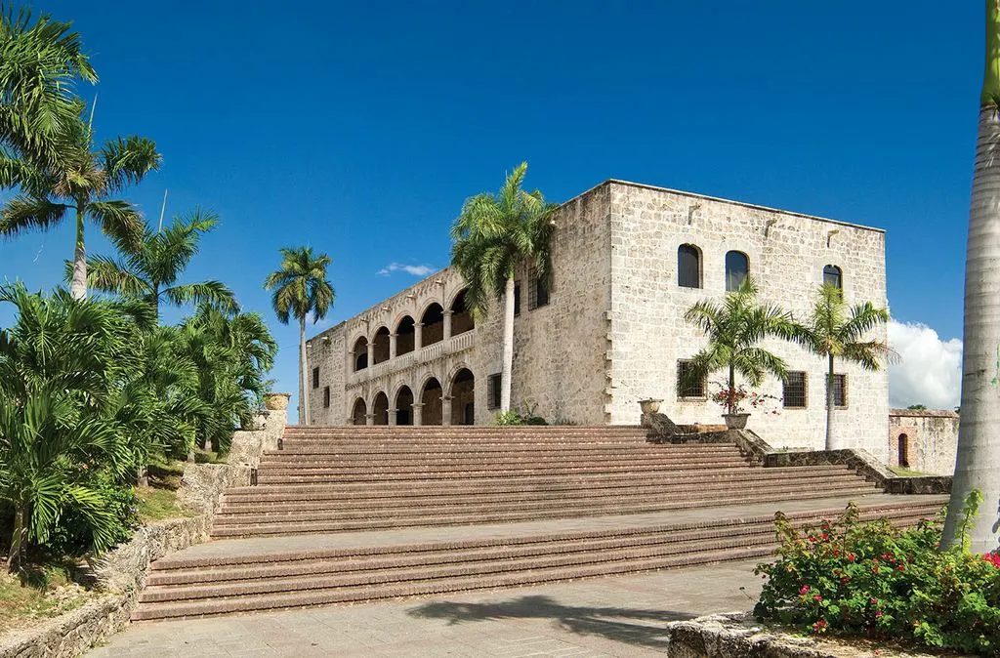
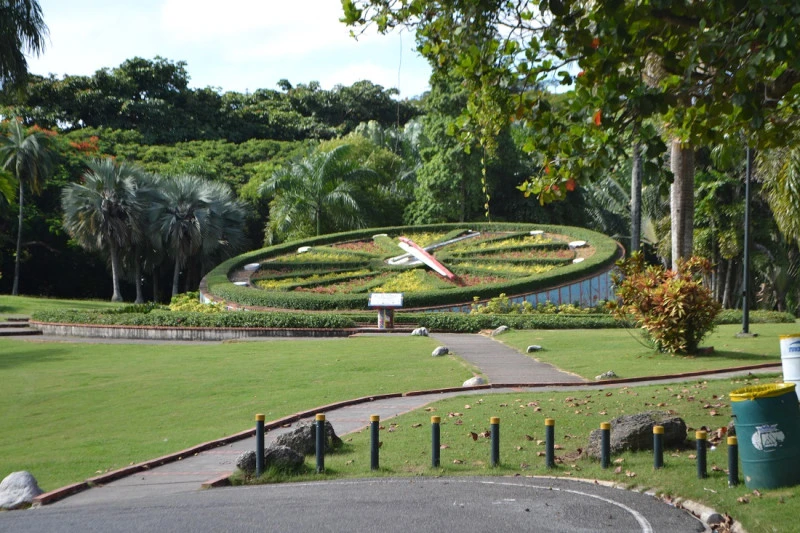
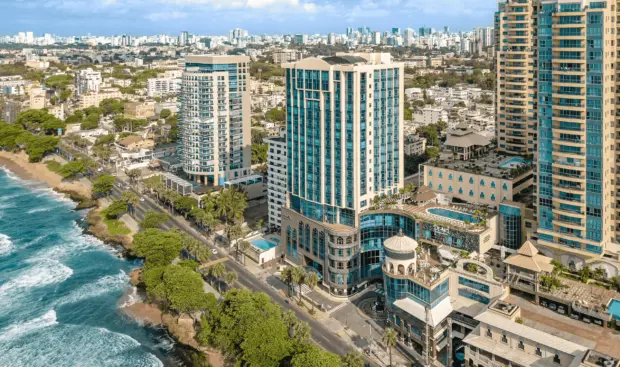
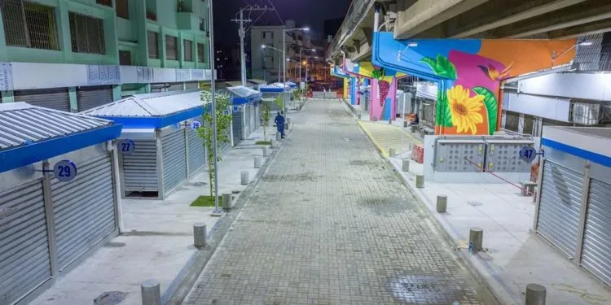
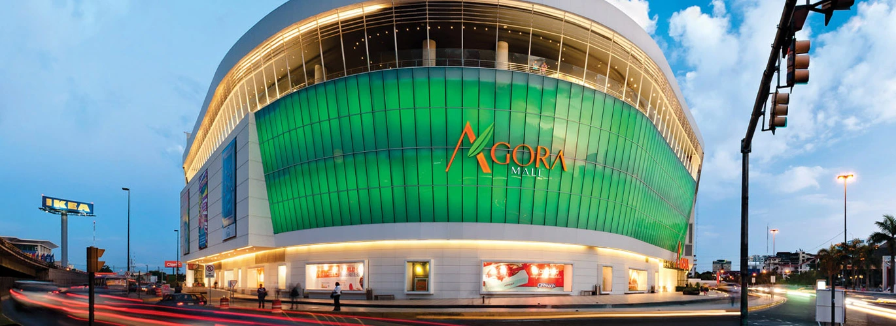

Alcázar de Colón

The Alcázar de Colón, a viceregal residence in the historic Colonial Zone.
Ozama Fortress
The Ozama Fortress, the oldest military structure in the Americas.
National Botanical Garden

Walking trails and biodiversity at the National Botanical Garden.
Malecón of Santo Domingo

Seaside views at the Malecón, a coastal symbol of the city.
Duarte with Paris Street

Duarte with Paris, a bustling commercial zone in the city center.
Ágora Mall

Ágora Mall, a modern and eco-friendly shopping center in Santo Domingo.